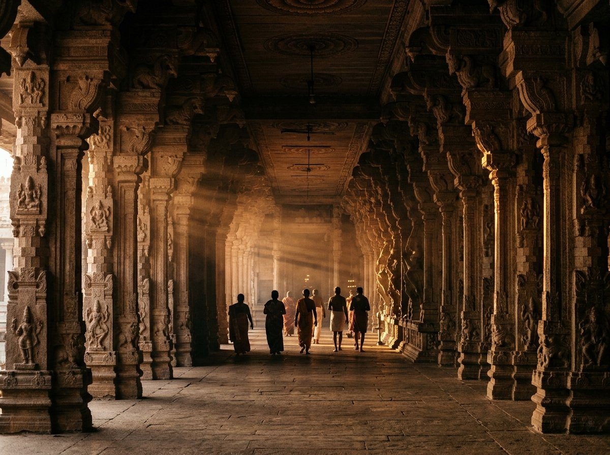
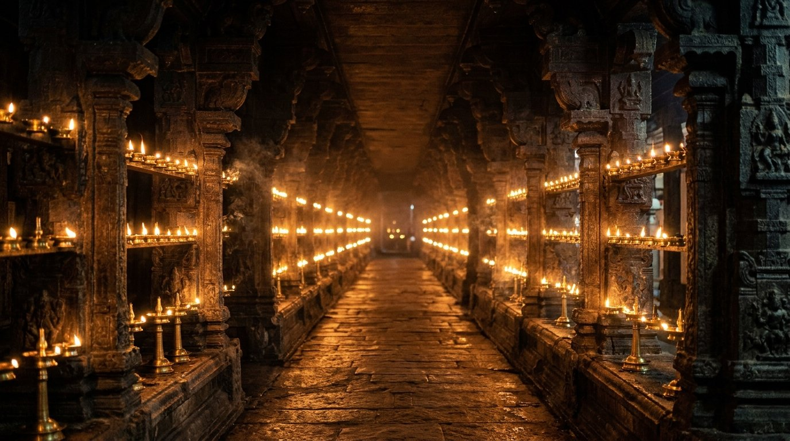
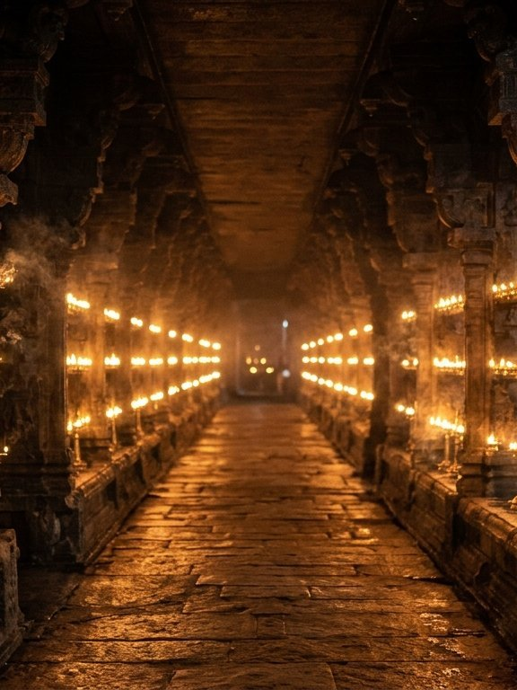
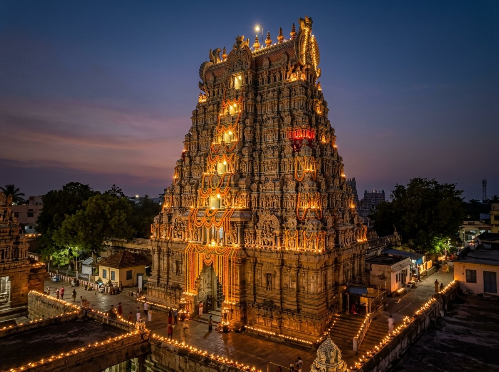
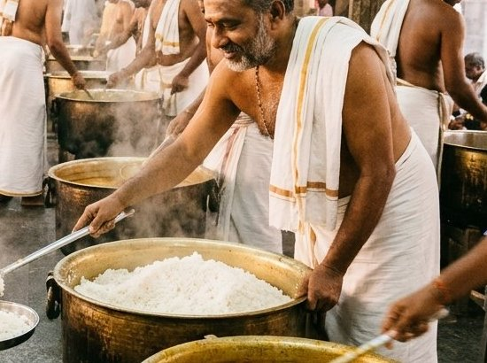
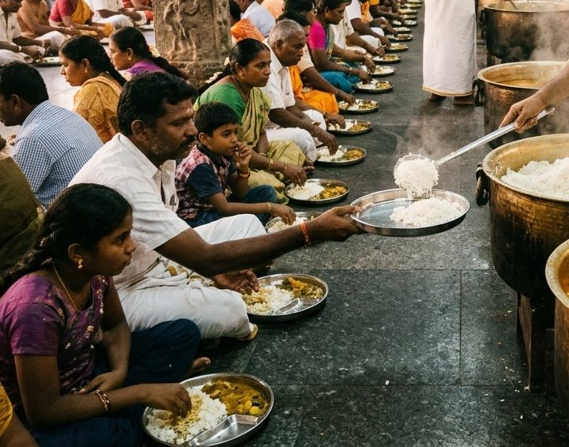

A sacred abode of peace
Experience Divine Serenity & Sacred Tradition.
Welcome to a place of devotion, prayer and community service. Find darshan information, daily pooja schedules, festival updates and ways to participate in temple seva.

Sanctum & Seva PortalWorship · Heritage · Annadanam
Plan your visit
Everything a devotee needs, in one place.
Explore worship schedules, upcoming celebrations and online services before your visit.
Morning worshipSuprabhatamIllustrative schedule · verify locally
Morning darshanDarshan HoursSee official daily timings
Evening worshipDeeparadhanaSee official daily timings
Special worshipMaha AartiSee official daily timings
The times above are labels only. Confirm and publish actual temple timings before launch.

Celebrations
Festivals & Events
Stay informed about utsavams, processions and spiritual programmes.


SevaWorship expressed through service and compassion.
Service beyond the sanctum
Preserving heritage. Serving humanity.
Discover the trust’s charitable and cultural initiatives, including Annadanam, education, heritage conservation and community welfare programmes where active.
- Annadanam and pilgrim support
- Vedic learning and cultural preservation
- Temple restoration and heritage projects
- Community health and welfare initiatives
Sanctum traditions
Four pillars of daily temple life.
Experience timeless Agama rituals, Vedic chanting, sacred hospitality and quiet contemplation across every visit.
Agama Pooja Vidhi
Daily abhishekam, alankaram and deeparadhana observed in unbroken traditional order.
Veda Parayanam
Morning and evening Vedic hymns filling the mandapam with serene resonance.
Prasad & Annadanam
Warm community meal service and blessed prasadam shared with visiting pilgrims.
Mandapam Heritage
Carved stone pillars, brass deepams and tranquil courtyards maintained for reflection.
“Om Sarve Bhavantu Sukhinah” — May all beings find peace, health and harmony.
Explore HeritageVisitor reflection
“Step gently past the outer gopuram, leave daily hurry behind, and let the temple bell guide the mind toward stillness.”Sri Dharma Kshetra · Pilgrim Ethos
Review dress code, photography etiquette and accessibility support before arriving for darshan.
View Visitor GuidanceWhat should devotees keep in mind before visiting?
Modest traditional attire is encouraged, footwear is left at the designated counter, and mobile phones should remain on silent inside the sanctum.
How can I confirm exact daily darshan or festival timings?
Timings may shift on auspicious days and utsavams. Always verify the latest schedule on the Timings page or with the temple office directly.
Are online seva requests and donations confirmed immediately?
This portal serves as an information guide; official confirmations and receipts are issued solely through verified temple office channels.
Is senior-citizen or accessibility assistance available?
Devotees needing wheelchair access or priority guidance may contact the temple office ahead of their visit for smooth arrangements.
Sacred invitation
Loka Samasta Sukhino Bhavantu
Carry the temple’s peace into your daily life.
Whether you join in person for morning darshan or participate from afar through authorised seva and charitable offerings, every visit strengthens our shared spiritual heritage.